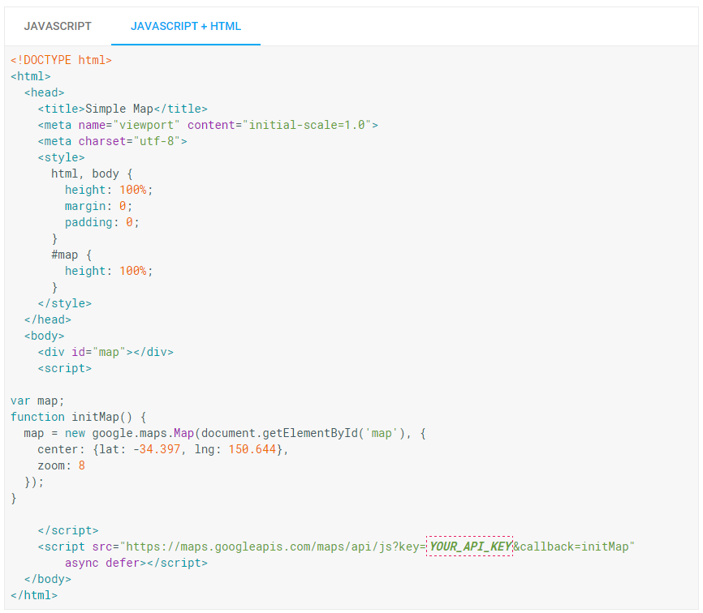

1. If you use everything inside of the style tag your map will take up the entire screen. I would recommend
using width="100%" and then set the height to a number of pixels that is appropriate to your
application.
2. Notice there is a div="map" which will allow us to reference that piece. Additionally this is where the
map will
actually show up in your document. Move the div around to manipulate the location of your map.
3. Inside the of the script tag we have the meat and potatoes. In this section we are creating the map
object. We are making an asynchronous call to
the Google Maps Api. The property center is telling the map where to be centered. The zoom property is
giving us a default zoom level. For the center, you will want to use a tool
to convert your address to 'latlng' to center it.
4. The last thing to comment before we move on it that each map comes with some standard controls on it. Right now you have access to zoom controls, two different terrain controls, a little "guy" who you can drag and drop to get quickly to street view. 